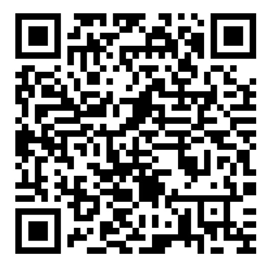

📱 สแกนเพื่อร่วมบริจาค
ร่วมสนับสนุนการเรียนรู้ของนักเรียน ผ่านระบบ e-Donation

e-Donationสแกน QR Code เพื่อบริจาคQR Code นี้ใช้ไฟล์ภาพต้นฉบับ ไม่ปรับรูปแบบหรือลวดลาย
หลังจากโอนเงินแล้ว กรุณาส่งชื่อ รูปภาพ และสลิป เพื่อให้โรงเรียนจัดทำบัตรขอบคุณ
💌 ส่งข้อมูลเพื่อจัดทำบัตรขอบคุณ
กรอกชื่อและจำนวนเงิน พร้อมแนบรูปและหลักฐานการโอนเงิน โรงเรียนจะตรวจสอบก่อนจัดทำภาพขอบคุณ
🔎 ค้นหาบัตรขอบคุณ
พิมพ์ชื่อที่กรอกไว้ ระบบจะค้นหาโดยอัตโนมัติ ผลการค้นหาสาธารณะจะแสดงเฉพาะรายการที่ยินยอมเผยแพร่